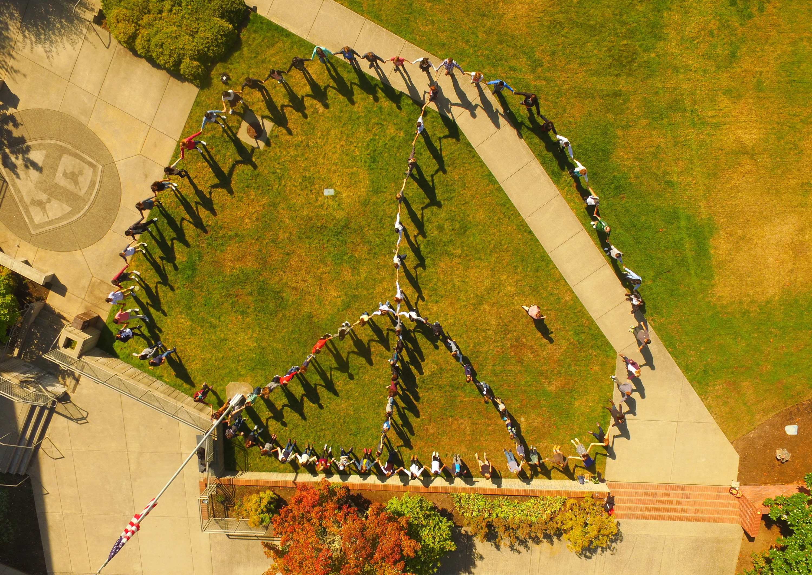
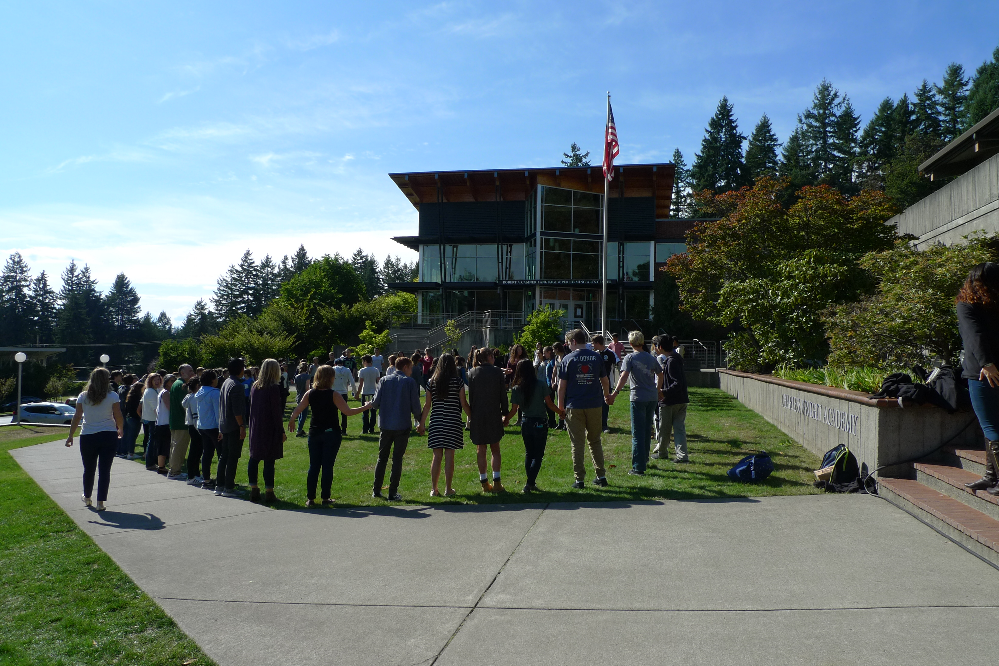
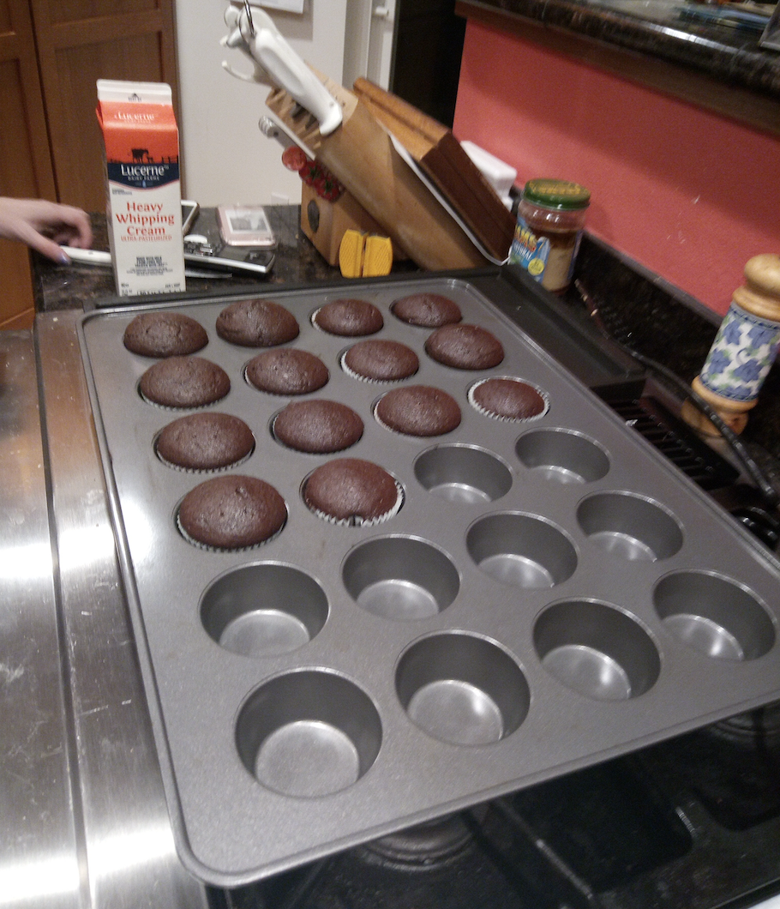
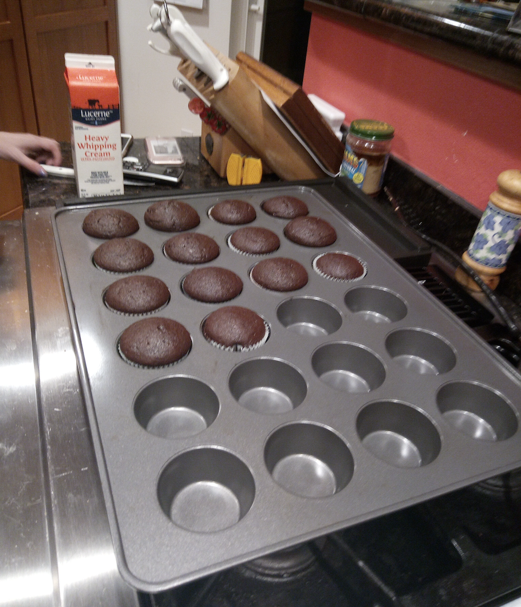

In 2017, I attended the Global Summit held by a high school Charles Wright Academy in Tacoma, Washington. Those are two pictures of Charles Wright Academy hosting the Summit in 2017. It was my first time flying to an unfamiliar place for an event, so I was very excited and nervous inside. The encouragement from my friends and the warm care from my host family made this experience extremely memorable. We attended classes with students from this school, participated in activities and had discussions with Global Summit participants all over the world. On the weekends, I also went to Seattle with my host family to have fun, tried all kinds of food, and got a lot of interesting souvenirs. We also made cookies and cakes together on the weekends. What a sweet memory!


I was warmly welcomed by my host family. I still remember when I entered the house, I saw a big blackboard with the words "Welcome Phoebe". When I read this line, the fear and nervousness I had due to coming to a new place suddenly disappeared

I am a dog lover and regard them as my friends. We bring joy to each other and heal each other. My host family has a dog named Lucy. Since I took care of her every day, we became really good friends. Whenever I was home, she would always lie beside me. Companionship is the most heartfelt confession.

On our first day at the summit, all the participating students held hands and posed together with the logo of this high school. I find this event really meaningful since it can help Global Summit participants know each other and make connections with each other quickly.
 On the weekends, I drove to Seattle with my host family to have fun. We visited the first Starbucks in Seattle and the Pike Place Market. We also tasted a lot of delicious food and wandered around many stylized streets. An interesting thing happened was that the day I visited Seattle was sunny.

 

I had a lot of fun classes at this high school, such as French, singing, and Chemistry classes. This photo was taken during my chemistry class.